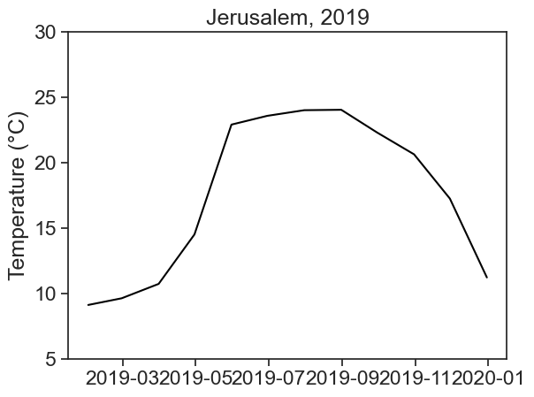
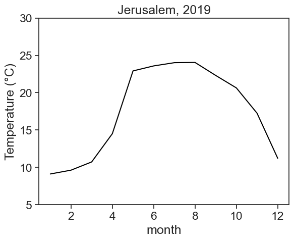
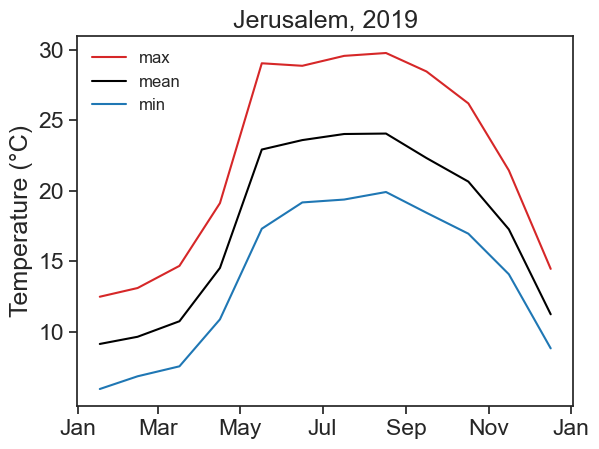

import numpy as np
import matplotlib.pyplot as plt
import pandas as pd
from matplotlib.dates import DateFormatter
import matplotlib.dates as mdates
import matplotlib.ticker as ticker
import warnings
# Suppress FutureWarnings
warnings.simplefilter(action='ignore', category=FutureWarning)
warnings.simplefilter(action='ignore', category=UserWarning)
import seaborn as sns
sns.set(style="ticks", font_scale=1.5) # white graphs, with large and legible letters6 resampling
We can only really understand how to calculate monthly means if we do it ourselves.
First, let’s import a bunch of packages we need to use.
Now we load the csv file for Jerusalem (2019), provided by the IMS.
discussion
We will go to the IMS website together and see what are the options available and how to download. If you just need the csv right away, download it here.- We substitute every occurence of
-for NaN (not a number, that is, the data is missing). - We call the columns
Temperature (°C)andRainfall (mm)with more convenient names, since we will be using them a lot. - We interpret the column
Date & Time (Winter)as a date, saying to python that day comes first. - We make
datethe index of the dataframe.
filename = "../archive/data/jerusalem2019.csv"
df = pd.read_csv(filename, na_values=['-'])
df.rename(columns={'Temperature (°C)': 'temperature',
'Rainfall (mm)': 'rain'}, inplace=True)
df['date'] = pd.to_datetime(df['Date & Time (Winter)'], dayfirst=True)
df = df.set_index('date')
df| Station | Date & Time (Winter) | Diffused radiation (W/m^2) | Global radiation (W/m^2) | Direct radiation (W/m^2) | Relative humidity (%) | temperature | Maximum temperature (°C) | Minimum temperature (°C) | Wind direction (°) | Gust wind direction (°) | Wind speed (m/s) | Maximum 1 minute wind speed (m/s) | Maximum 10 minutes wind speed (m/s) | Time ending maximum 10 minutes wind speed (hhmm) | Gust wind speed (m/s) | Standard deviation wind direction (°) | rain | |
|---|---|---|---|---|---|---|---|---|---|---|---|---|---|---|---|---|---|---|
| date | ||||||||||||||||||
| 2019-01-01 00:00:00 | Jerusalem Givat Ram | 01/01/2019 00:00 | 0.0 | 0.0 | 0.0 | 80.0 | 8.7 | 8.8 | 8.6 | 75.0 | 84.0 | 3.3 | 4.3 | 3.5 | 23:58 | 6.0 | 15.6 | 0.0 |
| 2019-01-01 00:10:00 | Jerusalem Givat Ram | 01/01/2019 00:10 | 0.0 | 0.0 | 0.0 | 79.0 | 8.7 | 8.8 | 8.7 | 74.0 | 82.0 | 3.3 | 4.1 | 3.3 | 00:01 | 4.9 | 14.3 | 0.0 |
| 2019-01-01 00:20:00 | Jerusalem Givat Ram | 01/01/2019 00:20 | 0.0 | 0.0 | 0.0 | 79.0 | 8.7 | 8.8 | 8.7 | 76.0 | 82.0 | 3.2 | 4.1 | 3.3 | 00:19 | 4.9 | 9.9 | 0.0 |
| 2019-01-01 00:30:00 | Jerusalem Givat Ram | 01/01/2019 00:30 | 0.0 | 0.0 | 0.0 | 79.0 | 8.7 | 8.7 | 8.6 | 78.0 | 73.0 | 3.6 | 4.2 | 3.6 | 00:30 | 5.2 | 11.7 | 0.0 |
| 2019-01-01 00:40:00 | Jerusalem Givat Ram | 01/01/2019 00:40 | 0.0 | 0.0 | 0.0 | 79.0 | 8.6 | 8.7 | 8.5 | 80.0 | 74.0 | 3.6 | 4.4 | 3.8 | 00:35 | 5.4 | 10.5 | 0.0 |
| ... | ... | ... | ... | ... | ... | ... | ... | ... | ... | ... | ... | ... | ... | ... | ... | ... | ... | ... |
| 2019-12-31 22:20:00 | Jerusalem Givat Ram | 31/12/2019 22:20 | 0.0 | 0.0 | 1.0 | 81.0 | 7.4 | 7.6 | 7.3 | 222.0 | 255.0 | 0.5 | 0.9 | 1.0 | 22:11 | 1.0 | 47.9 | 0.0 |
| 2019-12-31 22:30:00 | Jerusalem Givat Ram | 31/12/2019 22:30 | 0.0 | 0.0 | 1.0 | 83.0 | 7.3 | 7.4 | 7.3 | 266.0 | 259.0 | 0.6 | 0.8 | 0.6 | 22:28 | 1.1 | 22.8 | 0.0 |
| 2019-12-31 22:40:00 | Jerusalem Givat Ram | 31/12/2019 22:40 | 0.0 | 0.0 | 1.0 | 83.0 | 7.5 | 7.6 | 7.3 | 331.0 | 317.0 | 0.5 | 0.8 | 0.6 | 22:35 | 1.0 | 31.6 | 0.0 |
| 2019-12-31 22:50:00 | Jerusalem Givat Ram | 31/12/2019 22:50 | 0.0 | 0.0 | 1.0 | 83.0 | 7.5 | 7.6 | 7.4 | 312.0 | 285.0 | 0.6 | 1.0 | 0.6 | 22:50 | 1.4 | 31.3 | 0.0 |
| 2019-12-31 23:00:00 | Jerusalem Givat Ram | 31/12/2019 23:00 | 0.0 | 0.0 | 1.0 | 83.0 | 7.6 | 7.7 | 7.4 | 315.0 | 321.0 | 0.7 | 1.0 | 0.8 | 22:54 | 1.3 | 23.5 | 0.0 |
52554 rows × 18 columns
With resample it’s easy to compute monthly averages. Resample by itself only divides the data into buckets (in this case monthly buckets), and waits for a further instruction. Here, the next instruction is mean.
date
2019-01-31 9.119937
2019-02-28 9.629812
2019-03-31 10.731571
2019-04-30 14.514329
2019-05-31 22.916894
2019-06-30 23.587361
2019-07-31 24.019403
2019-08-31 24.050822
2019-09-30 22.313287
2019-10-31 20.641868
2019-11-30 17.257153
2019-12-31 11.224131
Freq: M, Name: temperature, dtype: float64Instead of M for month, which other options do I have? The full list can be found here, but the most commonly used are:
M month end frequency
MS month start frequency
A year end frequency
AS, YS year start frequency
D calendar day frequency
H hourly frequency
T, min minutely frequency
S secondly frequencyThe results we got for the monthly means were given as a pandas series, not dataframe. Let’s correct this:
df_month = (df['temperature'].resample('M') # resample by month
.mean() # take the mean
.to_frame('mean temp') # make output a dafaframe
)
df_month| mean temp | |
|---|---|
| date | |
| 2019-01-31 | 9.119937 |
| 2019-02-28 | 9.629812 |
| 2019-03-31 | 10.731571 |
| 2019-04-30 | 14.514329 |
| 2019-05-31 | 22.916894 |
| 2019-06-30 | 23.587361 |
| 2019-07-31 | 24.019403 |
| 2019-08-31 | 24.050822 |
| 2019-09-30 | 22.313287 |
| 2019-10-31 | 20.641868 |
| 2019-11-30 | 17.257153 |
| 2019-12-31 | 11.224131 |
hot tip
Sometimes, a line of code can get too long and messy. In the code above, we broke line for every step, which makes the process so much cleaner. We highly advise you to do the same. Attention: This trick works as long as all the elements are inside the same parenthesis.Now it’s time to plot!
fig, ax = plt.subplots()
ax.plot(df_month['mean temp'], color='black')
ax.set(ylabel='Temperature (°C)',
yticks=np.arange(5,35,5),
title="Jerusalem, 2019")[Text(0, 0.5, 'Temperature (°C)'),
[<matplotlib.axis.YTick at 0x7faf784c6d60>,
<matplotlib.axis.YTick at 0x7faf7843a220>,
<matplotlib.axis.YTick at 0x7faf784c62b0>,
<matplotlib.axis.YTick at 0x7faf784f3400>,
<matplotlib.axis.YTick at 0x7faf784f3760>,
<matplotlib.axis.YTick at 0x7faf784fa5b0>],
Text(0.5, 1.0, 'Jerusalem, 2019')]
The dates in the horizontal axis are not great. An easy fix is to use the month numbers instead of dates.
fig, ax = plt.subplots()
ax.plot(df_month.index.month, df_month['mean temp'], color='black')
ax.set(xlabel="month",
ylabel='Temperature (°C)',
yticks=np.arange(5,35,5),
title="Jerusalem, 2019",);
discussion
When you have datetime as the dataframe index, you don’t need to give the function plot two arguments, date and values. You can just tell plot to use the column you want, the function will take the dates by itself.
df_month['mean temp'].index.month
Print on the screen the following, and see yourself what each thing is:
df_monthdf_month.indexdf_month.index.monthdf_month.index.day
We’re done! Congratulations :)
Now we need to calculate the average minimum/maximum daily temperatures. We start by creating an empty dataframe.
Now resample data by day (D), and take the min/max of each day.
df_day['min temp'] = df['temperature'].resample('D').min()
df_day['max temp'] = df['temperature'].resample('D').max()
df_day| min temp | max temp | |
|---|---|---|
| date | ||
| 2019-01-01 | 7.5 | 14.1 |
| 2019-01-02 | 6.6 | 11.5 |
| 2019-01-03 | 6.3 | 10.7 |
| 2019-01-04 | 6.6 | 14.6 |
| 2019-01-05 | 7.0 | 11.4 |
| ... | ... | ... |
| 2019-12-27 | 4.4 | 7.4 |
| 2019-12-28 | 6.6 | 10.3 |
| 2019-12-29 | 8.1 | 12.5 |
| 2019-12-30 | 6.9 | 13.0 |
| 2019-12-31 | 5.2 | 13.3 |
365 rows × 2 columns
The next step is to calculate the average minimum/maximum for each month. This is similar to what we did above.
df_month['min temp'] = df_day['min temp'].resample('M').mean()
df_month['max temp'] = df_day['max temp'].resample('M').mean()
df_month| mean temp | min temp | max temp | |
|---|---|---|---|
| date | |||
| 2019-01-31 | 9.119937 | 5.922581 | 12.470968 |
| 2019-02-28 | 9.629812 | 6.825000 | 13.089286 |
| 2019-03-31 | 10.731571 | 7.532258 | 14.661290 |
| 2019-04-30 | 14.514329 | 10.866667 | 19.113333 |
| 2019-05-31 | 22.916894 | 17.296774 | 29.038710 |
| 2019-06-30 | 23.587361 | 19.163333 | 28.860000 |
| 2019-07-31 | 24.019403 | 19.367742 | 29.564516 |
| 2019-08-31 | 24.050822 | 19.903226 | 29.767742 |
| 2019-09-30 | 22.313287 | 18.430000 | 28.456667 |
| 2019-10-31 | 20.641868 | 16.945161 | 26.190323 |
| 2019-11-30 | 17.257153 | 14.066667 | 21.436667 |
| 2019-12-31 | 11.224131 | 8.806452 | 14.448387 |
Let’s plot…
fig, ax = plt.subplots()
ax.plot(df_month['max temp'], color='tab:red', label='max')
ax.plot(df_month['mean temp'], color='black', label='mean')
ax.plot(df_month['min temp'], color='tab:blue', label='min')
ax.set(ylabel='Temperature (°C)',
yticks=np.arange(10,35,5),
title="Jerusalem, 2019")
ax.xaxis.set_major_locator(mdates.MonthLocator(range(1, 13, 2), bymonthday=15))
date_form = DateFormatter("%b")
ax.xaxis.set_major_formatter(date_form)
ax.legend(fontsize=12, frameon=False);
Voilà! You made a beautiful graph!
discussion
This time we did not put month numbers in the horizontal axis, we now have month names. How did we do this black magic, you ask? See lines 8–10 above. Matplotlib gives you absolute power over what to put in the axis, if you can only know how to tell it to… Wanna know more? Click here.